2015 Weighted Results
Weighting the Census
What is the Census?
The Census is a collaborative research project that started in 2002.
Although the BRC Census is technically a survey and not a real census (where everyone in a population was sampled), we aspire to be a true census where everyone voluntarily participates.
Until that day, we will continue to provide the most complete picture possible of the highly diverse population of Black Rock City.
Method and Weighting Procedures
A research ethics committee (@ Denver University) approved the project. Respondent confidentiality is protected.
This is the 5th consecutive year when results were weighted to correct for non-response biases, making the results the most reliable estimates concerning the BRC population.
Unbiased reference: random sample of cars at the gate during ingress, asking nine sociodemographic questions of each sampled Burner who accepted.
The weighting procedure corrects biases due to self-selection in the after-event, online survey. (i.e., Burners who decided to fill out the Census might be different from those who chose not to fill it out).
Thus, the results were weighted according to this random sampling, improving the collective accuracy of the data.
Census Results
These results are the most reliable estimates that we have of the Black Rock City population. The “real” population values could be slightly different from the presented values due to measurement error.
Confidence intervals were not included in the graphs. However, these confidence intervals are very small due to the sheer number of survey participants.
More precisely, the margin of error for most of the estimated proportions is roughly 1% or less, 19 times out of 20. In other words, you can safely estimate that the 95% confidence interval of most proportions presented herein equals more or less the stated value +/-1%.
For more results, visit us on the playa (near Center Camp) and follow the Census Lab’s blog at http://blackrockcitycensus.wordpress.com or at our new home at http://journal.burningman.org/census.
Variables Used to Weight the Census
Variables used to weight the 2015 Census:
- Day of arrival
- Gender
- Age
- Virgin Burner or not
- US Resident or not
- English as a first language or not
- US Party Affiliation (if eligible to vote in the US)
- Voting behavior
Demographic Characteristics
Age and Gender
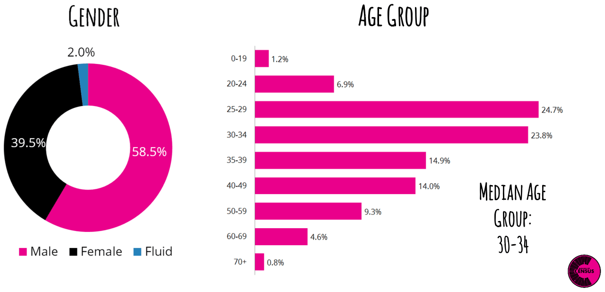
Prior Burning Man Experience
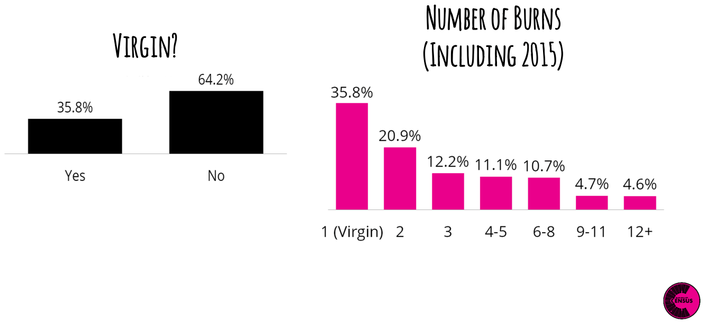
Current Place of Residence
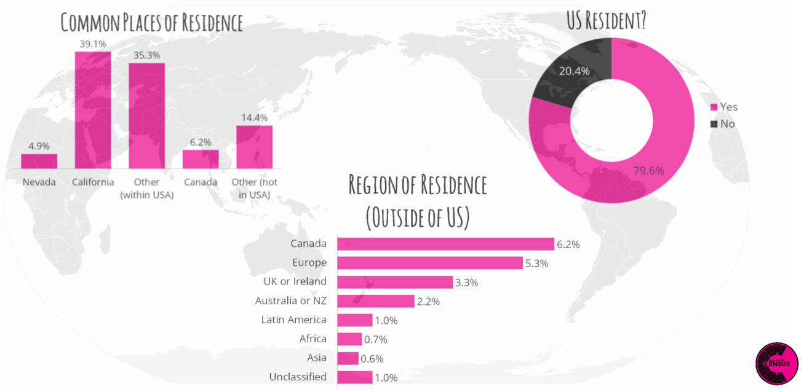
First Language Learned
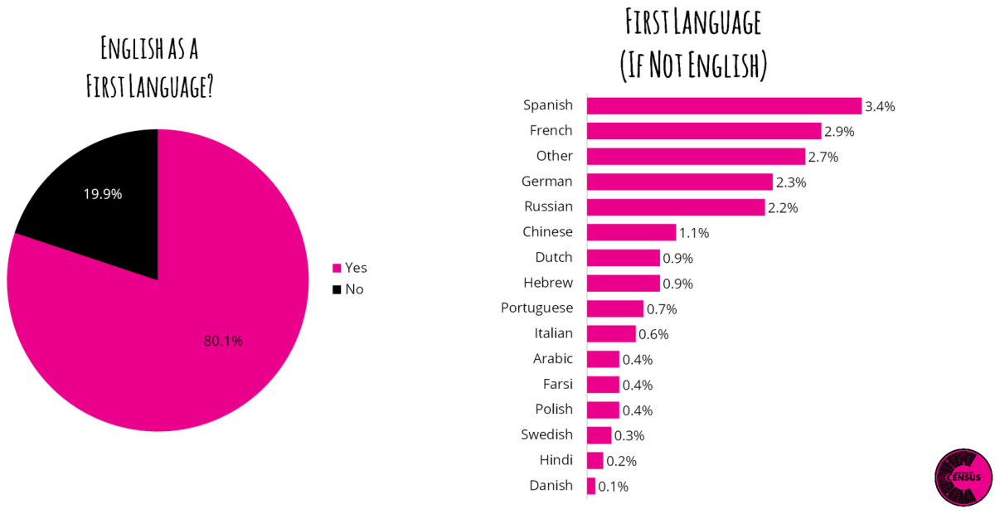
Sociodemographic Characteristics
Personal and Household Income
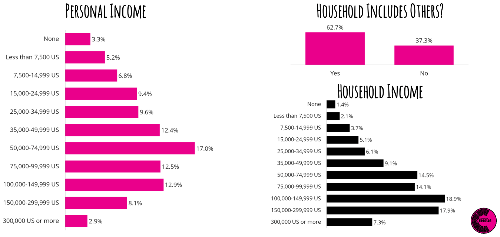
Education
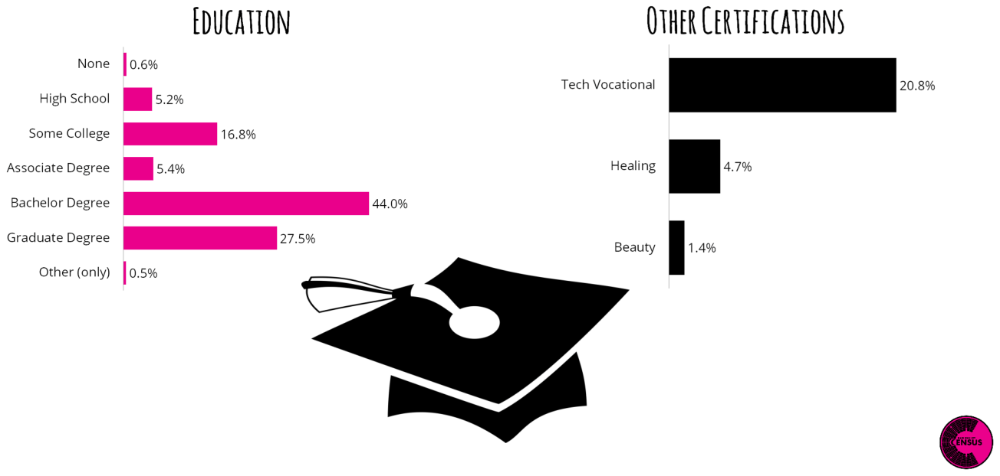
Ethnoracial Composition
Ethnoracial Diversity in BRC
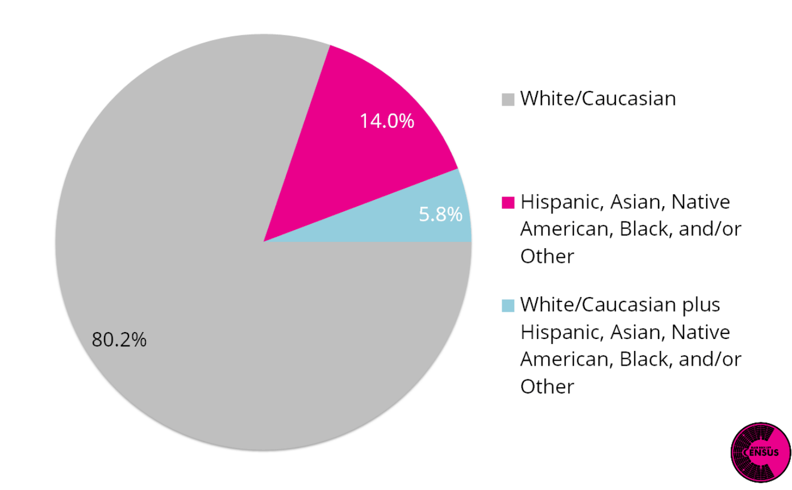
Which category best describes your ethnoracial background? Respondents checked one or more boxes that applied.
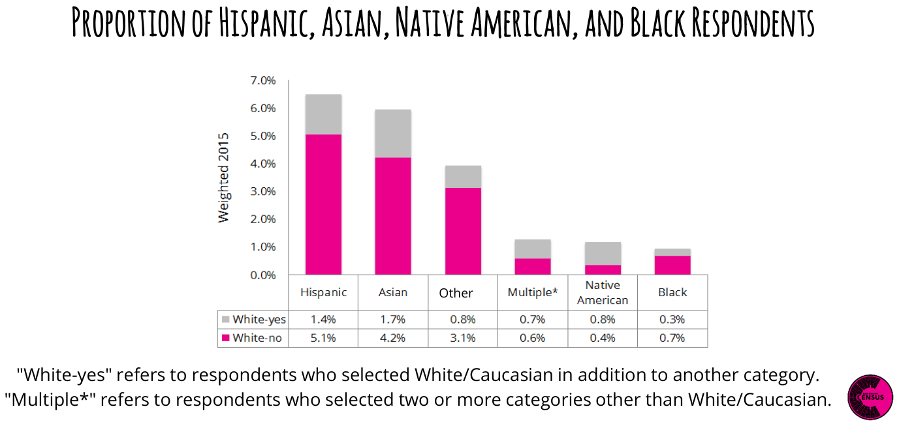
Do You Consider Yourself To Be a Person Of Color?
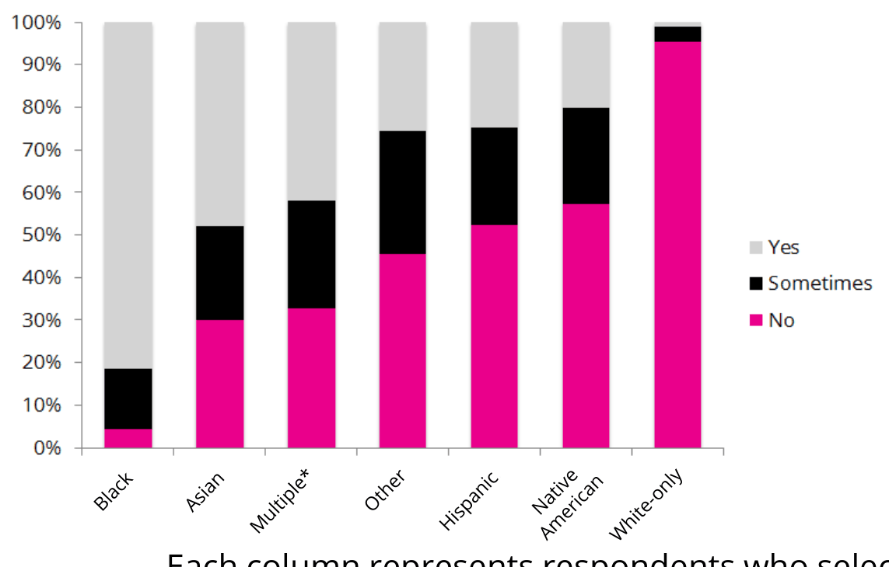
This graph looks at how respondents answered both questions:
- Do you consider yourself to be a person of color? Respondents answered “Yes,” “No,” or “Sometimes”
- Which category best describes your ethnoracial background? Respondents checked one or more boxes that applied.
Each column represents respondents who selected one category and respondents who selected that category plus White/Caucasian. “Multiple” refers to respondents who selected two or more categories other than White/Caucasian.
Life in Black Rock City
Camp Size and Location Decisions
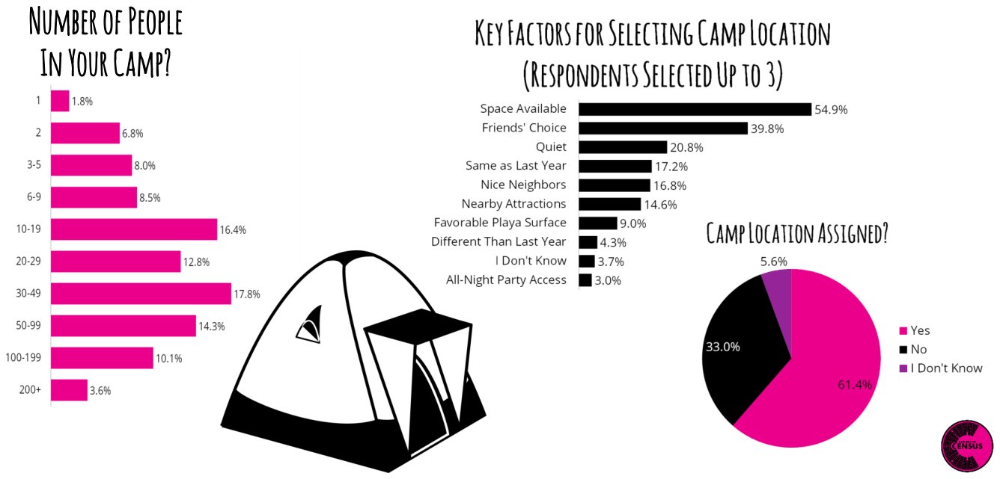
Power Source and RV/Camper Use
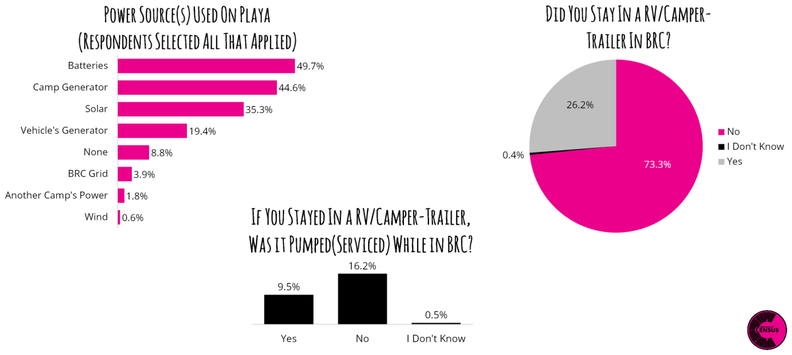
Burning Man Information and Regional Involvement
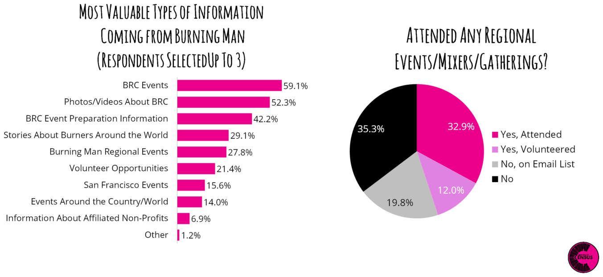
Identity and Self
Sexual Orientation and Attraction
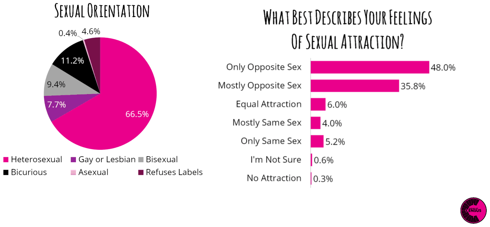
Religion and Spirituality
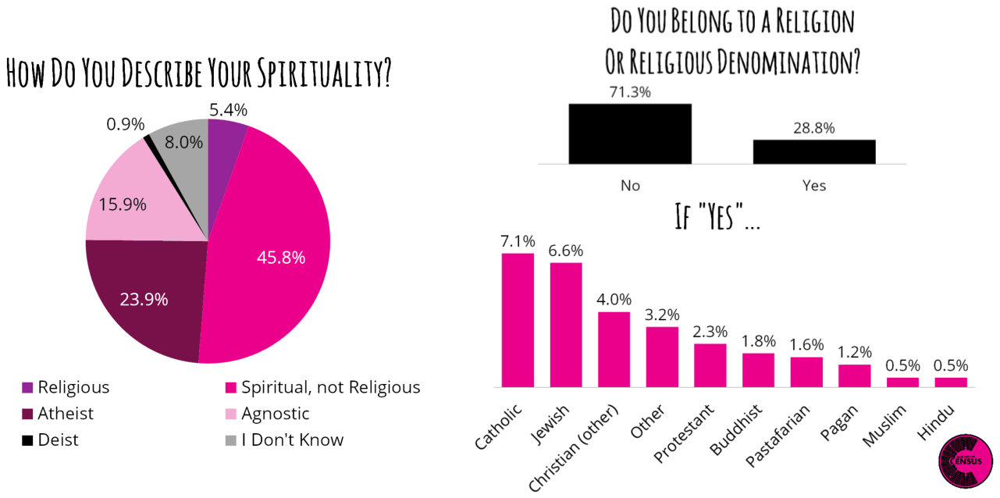
Census Team Information
Contributions and Acknowledgements
Principal investigators and project coordinators: S. Megan Heller (Countess), Dana Lilienthal DeVaul (DV8), Dominic Beaulieu-Prévost (Hunter), and Kateri McRae (Variance)
Data analysis: Dominic Beaulieu-Prévost (Hunter), David Nelson-Gal (Scribble)
Report coordination, graphics, layout & design: Rebecca Mason (B^2), Aaron Shev (Murse), Dana Lilienthal DeVaul (DV8), David Nelson-Gal (Scribble), Jason Lankow, & John Nicholson
The 2015 Census Lab: The project also involved more than 150 volunteers whose contributions were essential in many ways: research collaborators, volunteer coordinators, statisticians, camp builders, gate samplers, keypunchers, census lab hosts, graphic designers, and many more. These contributors will globally be referred to as “the Census Lab”. We would also like to thank the Burning Man organization for the resources that they provided both on playa and off playa and for believing in the project.
Still Curious?
To contact the Census Lab, please write to census@burningman.org
You can also access the Census Lab’s blog at http://blackrockcitycensus.wordpress.com or at our new home at http://journal.burningman.org/census
Citation: Heller, S.M., Beaulieu-Prévost, D., DeVaul, D.L., McRae, K., and the 2015 Census Lab. (2016). 2015 Black Rock City Census: Weighted results report. Black Rock City Census. Copyright © 2016 Heller et al.
This is an open-access report distributed under the terms of Creative Commons Attribution License, which permits unrestricted use, distribution, and reproduction in any medium, provided the original authors and source are credited.